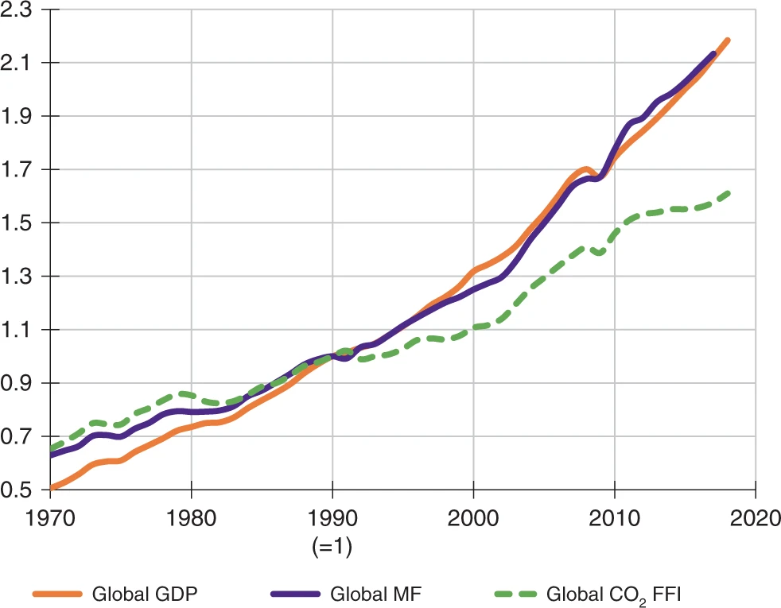

Created Thursday 25 June 2020
@2020 @article
Wiedmann, T., Lenzen, M., Keyßer, L. T., & Steinberger, J. K. (2020). Scientists’ warning on affluence. Nature Communications, 11(1), 3107. https://doi.org/10.1038/s41467-020-16941-y
See also: INDEX:FORECASTS:Warnings:From scientists to humanity
Assumptions etc
2019:Ripple19 , 2017:ScientistsWarning-Ripple and 2015:SteffenPlanetaryBoundaries : recent scientific warnings confirming alarming trends of environmental degradation from human activity, with possible profound changes in essential life-sustaining functions of planet Earth
These warnings describe the problems identifying
- population
- economic growth
- affluence
as drivers of unsustainable trends, acknowledgint that humanity needs to reassess the role of growth-oriented economies and the pursuit of affluence ( 2017:ScientistsWarning-Ripple 2019:Ripple19 ); but they do not clearly identify the underlying forces of overconsumption nor they spell out what is needed
This paper
- synthesises existing knowledge and recommendations
- provides evidence that consumption of affluent households worldwide is by far the strongest determinant and the strongest accelerator of increases of global environmental and social impacts
- describes the systemic drivers of affluent overconsumption
- synthesizes literature that provides possible solutions by reforming or changing economic systems
- solutions range from reformist to radical ideas:
- degrowth
- eco-socialism
- eco-anarchism
2018:GrowthlessMacroecon-Lange : Whilst in Keynesian-type economics consumer demand drives production, Marxian political economics as well as environmental sociology views the economy as supply dominated
Key findings
Consumption strongest determinant of global impacts
Clear evidence: consumption is by far the strongest determinant of global impacts, dwarfing other socio-economic-demographic factors such as age, household size, qualification or dwelling structure (2019:CO2EmissionsEconGrowthReview-Mardani , 2019:CO2drivers-Chang , 2017:Emissions-income-Stern , 2013:EnergyRequirements-Wiederhofer
Absolute decoupling does not occur
Whilst the strength of the proportionality between consumption and impact decreases slightly towards higher incomes (measured by so-called elasticities), consumption was found to be a consistently positive driver. In other words, the impact intensity of consumption decreases, but absolute impacts increase towards higher consumption. Absolute decoupling, let alone an inverted-U-type Kuznets relationship, does not occur from a consumption-based accounting perspective. (DecouplReview-Haberl , 2015:MateriaFootprintNations-Wiedmann , 2019:DecouplDebunked-Parrique)
Tech change and per-capita consumption key drivers of impacts
Many indicators of global environmental and social impacts have been monitored over time, and time series data exist ( 2018:WiedmannEnvFootprintTrade ). Numerous global studies decomposing time series of footprints of consumption into drivers of trends have been carried out over the past decades, for example on greenhouse-gas emissions, energy use, water use, materials or mercury emissions. These studies routinely decompose global impact trends into effects due to changes in a number of factors, such as technology, the input structure of production, the product mix in consumer demand, the level of per-capita consumption or population ( 2016:EnergUseAndCO2Emissions-Lenzen ).
The majority of studies agree that by far the major drivers of global impacts are technological change and per-capita consumption ( DecouplReview-Haberl ). Whilst the former acts as a more or less strong retardant, the latter is a strong accelerator of global environmental impact. Remarkably, consumption (and to a lesser extent population) growth have mostly outrun any beneficial effects of changes in technology over the past few decades. These results hold for the entire world ( 2016:EnergGlobalFootprint-Lan , 2019:XiaoCarbonIntensity ) as well as for numerous individual countries ( DecouplReview-Haberl, 2015:CO2EmissionsUSADrivers-Feng , EnergCO2China-Zheng , 2019:Liu19 )
Overwhelming evidence: growth cancelled out gains from tech
The overwhelming evidence from decomposition studies is that globally, burgeoning consumption has diminished or cancelled out any gains brought about by technological change aimed at reducing environmental impact ( DecouplReview-Haberl )
Fig 1: Relative change of global GDP, material footprint, and CO2 from FFI, 1970-2017.
Relative change in main global economic and environmental indicators from 1970 to 2017

Shown is how the global material footprint (MF, equal to global raw material extraction) and global CO2 emissions from fossil-fuel combustion and industrial processes (CO2 FFI) changed compared with global GDP (constant 2010 USD). Indexed to 1 in 1990. Data sources: https://www.resourcepanel.org/global-material-flows-database, http://www.globalcarbonatlas.org and https://data.worldbank.org.
International Gini coefficients for CO2 emissions
Since income is strongly linked with consumption, and consumption is in turn linked with impact (see previous section), we can expect existing income inequalities to translate into equally significant impact inequalities. Indeed, environmental, resource and social impacts are exerted unequally across the world population. Teixido-Figueras et al ( 2016:InequalEnv-Teixido-Figueras ) report that international Gini coefficients for CO2 emissions, material consumption and net primary productivity (both measured from a production and consumption perspective) range between 35 and 60. These values mean that the world’s top 10% of income earners are responsible for between 25 and 43% of environmental impact. In contrast, the world’s bottom 10% income earners exert only around 3–5% of environmental impact ( 2016:InequalEnv-Teixido-Figueras ). These findings mean that environmental impact is to a large extent caused and driven by the world’s rich citizens ( 2015:CO2Inequal-Chancel ). Considering that the lifestyles of wealthy citizens are characterised by an abundance of choice, convenience and comfort, we argue that the determinant and driver we have referred to in previous sections as consumption, is more aptly labelled as affluence.
Estimated reduction need in rich countries 40-90%
Estimates of the needed reduction of resource and energy use in affluent countries, resulting in a concomitant decrease in GDP of similar magnitude, range from 40 to 90% ( 2018:HickelGoodLifeForAll , SimplerWayTrainer-Alexander )
Super-affluent consumers and growth imperatives
Growth imperatives are active at multiple levels, making the pursuit of economic growth (net investment, i.e. investment above depreciation) a necessity for different actors and leading to social and economic instability in the absence of it ( 2018:GrowthlessMacroecon-Lange , 2019:EnergyIntensityLabour-Richters ). Following a Marxian perspective as put forward by Pirgmaier and Steinberger ( 2019:Pirgmaier19 ), growth imperatives can be attributed to capitalism as the currently dominant socio-economic system in affluent countries 2018:GrowthlessMacroecon-Lange
, 2019:AlexanderDegrowthSuburbs , 2012:BlauwhofSteadyStateCapitalism ), although this is debated by other scholars 52. To structure this topic, we will discuss different affected actors separately, namely corporations, states and individuals, following Richters and Siemoneit ( 2019:EnergyIntensityLabour-Richters ). Most importantly, we address the role of the super-affluent consumers within a society, which overlap with powerful fractions of the capitalist class. From a Marxian perspective, this social class is structurally defined by its position in the capitalist production process, as financially tied with the function of capital ( 2018:Milios18 ). In capitalism, workers are separated from the means of production, implying that they must compete in labour markets to sell their labour power to capitalists in order to earn a living.
Even though some small- and medium-sized businesses manage to refrain from pursuing growth, e.g. due to a low competition intensity in niche markets, or lack of financial debt imperatives, this cannot be said for most firms ( 2017:Leonhardt17 ). In capitalism, firms need to compete in the market, leading to a necessity to reinvest profits into more efficient production processes to minimise costs (e.g. through replacing human labour power with machines and positive returns to scale), innovation of new products and/or advertising to convince consumers to buy more ( 2018:GrowthlessMacroecon-Lange , 2019:Pirgmaier19 , 2012:BlauwhofSteadyStateCapitalism ). As a result, the average energy intensity of labour is now twice as high as in 1950 ( 2019:EnergyIntensityLabour-Richters ). As long as a firm has a competitive advantage, there is a strong incentive to sell as much as possible. Financial markets are crucial to enable this constant expansion by providing (interest-bearing) capital and channelling it where it is most profitable ( 2012:TokicDegrowth , 2019:Pirgmaier19 , 2018:Milios18 ). If a firm fails to stay competitive, it either goes bankrupt or is taken over by a more successful business. Under normal economic conditions, this capitalist competition is expected to lead to aggregate growth dynamics ( 2018:GrowthlessMacroecon-Lange , 2012:BlauwhofSteadyStateCapitalism , 2018:Milios18 , 2016:CapitalismGreenFailed-Smith )
However, two factors exist that further strengthen this growth dynamic ( 2019:EnergyIntensityLabour-Richters ). Firstly, if labour productivity continuously rises, then aggregate economic growth becomes necessary to keep employment constant, otherwise technological unemployment results. This creates one of the imperatives for capitalist states to foster aggregate growth, since with worsening economic conditions and high unemployment, tax revenues shrink, e.g. from labour and value-added taxes, while social security expenditures rise ( 2019:EnergyIntensityLabour-Richters , 2012:BlauwhofSteadyStateCapitalism ). Adding to this, states compete with other states geopolitically and in providing favourable conditions for capital, while capitalists have the resources to influence political decisions in their favour. If economic conditions are expected to deteriorate, e.g. due to unplanned recession or progressive political change, firms can threaten capital flight, financial markets react and investor as well as consumer confidence shrink ( 2019:AlexanderDegrowthSuburbs , 2012:TokicDegrowth , 2019:EnergyIntensityLabour-Richters ). Secondly, consumers usually increase their consumption in tune with increasing production ( 2019:EnergyIntensityLabour-Richters ) . This process can be at least in part explained by substantial advertising efforts by firms (2015:SufficEcon-Alexander , 2002:SustainableConsumption-Sanne ). However, further mechanisms are at play as explained further below.
Following this analysis, it is not surprising that the growth paradigm is hegemonic, i.e. the perception that economic growth solves all kinds of societal problems, that it equals progress, power and welfare and that it can be made practically endless through some form of supposedly green or sustainable growth ( 2018:Kallis18 ) . Taken together, the described dynamics create multiple dependencies of workers, firms and states on a well-functioning capital accumulation and thus wield more material, institutional and discursive power (e.g. for political lobbying) to capitalists who are usually the most affluent consumers ( 2019:Pirgmaier19 EnergSociol-Galvin ). Even if different fractions of the capitalist class have manifold and competing interests which need to be constantly renegotiated, there is a common interest in maintaining the capitalist system and favourable conditions for capital accumulation, e.g. through aggregate growth and high consumption ( 2019:AlexanderDegrowthSuburbs , 2012:BlauwhofSteadyStateCapitalism ). How this political corruption by the super-affluent plays out in practice is well documented, e.g. for the meat industry in Denmark ( 2016:PowerSustainableConsumption-Fuchs ).
Super-affluent consumers drive consumption norms
Growth imperatives and drivers (with the latter describing less coercive mechanisms to increase consumption) can also be active at the individual level. In this case, the level of consumption can serve as a proxy (2015:SufficEcon-Alexander , 2019:EnergyIntensityLabour-Richters , 2019:ProductivityEfficiency-Siemoneit ). To start with, individual consumption decisions are not made in a vacuum, but are shaped by surrounding (physical and social) structures and provisioning systems ( 2015:SufficEcon-Alexander , 2019:Pirgmaier19 , 2019:Ribeiro19 ). Sanne ( 2002:SustainableConsumption-Sanne ) 66 and Alexander ( 2015:SufficEcon-Alexander ) discuss several structural barriers to sufficiency-oriented lifestyles, locking in high consumption. These include lack of suitable housing, insufficient options for socialising, employment, transport and information, as well as high exposure to consumer temptations. Often, these conditions are deliberately fostered by states and also capitalists (the latter overlapping with super-affluent consumers and having disproportionate influence on states) to increase consumption ( 2019:Pirgmaier19 , 2002:SustainableConsumption-Sanne ).
Positional and efficiency consumption
Further active mechanisms to spur growth include positional and efficiency consumption, which contribute to an increase in consumption overall ( 2019:EnergyIntensityLabour-Richters , 2019:ProductivityEfficiency-Siemoneit , 2015:SocialLimitsOfGrowth-Kallis ). After basic material needs are satisfied, an increasing proportion of consumption is directed at positional goods 2019:EnergyIntensityLabour-Richters , 2015:SocialLimitsOfGrowth-Kallis The defining feature of these goods is that they are expensive and signify social status. Access to them depends on the income relative to others. Status matters, since empirical studies show that currently relative income is one of the strongest determinants of individual happiness ( 2019:EnergyIntensityLabour-Richters ). In the aggregate however, the pursuit of positional consumption, driven by super-affluent consumers and high inequalities, likely resembles a zero-sum game with respect to societal wellbeing 2015:SocialLimitsOfGrowth-Kallis , 2018:EconHappiness-Clark . With every actor striving to increase their position relative to their peers, the average consumption level rises and thus even more expensive positional goods become necessary, while the societal wellbeing level stagnates 2017:ProsperityWithoutGrowth-Jackson , 2018:EconHappiness-Clark . This is supported by a large body of empirical research, showing that an individual’s happiness correlates positively with their own income but negatively with the peer group’s income 2018:EconHappiness-Clark and that unequal access to positional goods fosters rising consumption 2019:EnergyIntensityLabour-Richters. This endless process is a core part of capitalism as it keeps social momentum and consumption high with affluent consumers driving aspirations and hopes of social ascent in low-affluence segments 2015:SocialLimitsOfGrowth-Kallis , 2011:DeutschmannCapitalism . The positional consumption behaviour of the super-affluent thus drives consumption norms across the population, for instance through their excessive air travel, as documented by Gössling ( 2019:AirTravelCelebrities-Gössling )
Workers must compete with each other: efficiency consumption
Lastly, in capitalism, workers must compete against each other in the labour market in order to earn a living from capitalists ( 2018:GrowthlessMacroecon-Lange , 2018:Milios18 ). Following Siemoneit , this can lead to a similar imperative to net invest (increase the level of consumption/investment) as is observed with capitalists. In order to stay competitive, individuals are pushed to increase time and cost efficiency by investing in cars, kitchen appliances, computers and smartphones, by using social media and online trade etc. This efficiency consumption —effectively another facet of the rebound effect ( 2011:DruckmanRebound , 2015:SufficEcon-Alexander 2019:ProductivityEfficiency-Siemoneit )—helps to manage high workloads, thus securing an income, while maintaining private life. This is often accompanied by trends of commodification 2019:Pirgmaier19 , understood as the marketisation of products and services which used to be provisioned through more time-intensive commons or reciprocal social arrangements, e.g. convenience food vs. cooking together. As in the food example ( 2014:LCAFood-Schmidt Rivera ), this replacement of human labour with energy- and material-intensive industrial production typically increases environmental pressures ( 2015:SufficEcon-Alexander , ClimatMitigationConsumptionPotential-Ivanova ). Through these economic pressures, positive feedback loops and lock-ins are expected to emerge, since other consumers need to keep up with these investments or face disadvantages, e.g. when car or smartphone ownership become presupposed. Taken together with positional consumption, structural barriers to sufficiency and the substantial advertising efforts by capitalists, these mechanisms explain to a large extent why consumers seem so willing to increase their consumption in accordance with increasing production ( 2019:EnergyIntensityLabour-Richters ).
Solutions
One first and immediate action anyone can take is to talk about overconsumption, i.e. current levels of consumption by most people in the global North, and how it is unsustainable and unethical or unjust. A wide debate in society, research and policy is necessary. Many people do not see themselves being part of either the problem or the solution, but look for governments, technology and/or businesses to solve the problem. The necessary alternative futures need to be discussed, envisioned and shared. It is important to create a sense of collective responsibility and action. Social sciences research and approaches can help by creating, providing and sharing concepts, experiences and platforms where public debates and dialogues take place. People who have already downshifted should be enabled to share their motivations and experiences to break through stigma and isolation, as would activists building a larger popular movement on climate action.
References
2014:DeepGreenTransition-Alexander
2012:BlauwhofSteadyStateCapitalism
2019:Capellan-PerezEROIrenewables
2014:SustainableDesirableEconomy-Costanza
2018:CreutzigAvoidShiftImprove
GreenGrowthAlternatives-D'Alessandro
2014:SustainableConsumptionCorridors-DiGiulio
2019:GrowthEatsImprovements-Dyrstad
2016:PowerSustainableConsumption-Fuchs
2019:AirTravelCelebrities-Gössling
2019:GreenGrowthPossible-Hickel
2015:SocialLimitsOfGrowth-Kallis
2014:ReboundGlobalTrade-Kanemoto
2018:GrowthlessMacroecon-Lange
2017:CommonsDegrowEcovillage-Lockyer
2019:CO2EmissionsEconGrowthReview-Mardani
GlobalEnergyTransitionScenarios-Nieto
ClimatSocialTippingPoints-Otto
2019:EnergyIntensityLabour-Richters
2002:SustainableConsumption-Sanne
2019:ProductivityEfficiency-Siemoneit
2014:GlobalizationSocialImpacts-Simas
2014:SustainableConsumptionChange-Spangenberg
2015:SteffenPlanetaryBoundaries
2019:SustFuturePossible-Turner
2019:DegrowthTransition-Vandeventer
2015:MateriaFootprintNations-Wiedmann
{kind=link}